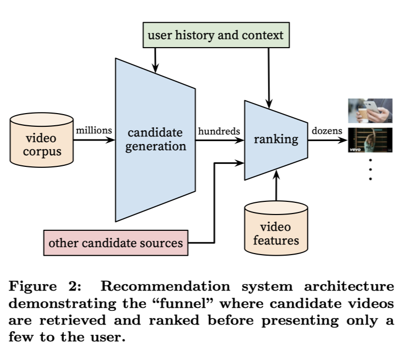

Deep Neural Networks for YouTube Recommendations论文阅读
推荐YouTube videos的挑战主要来自三个方面：
scale
需要将推荐算法应用在极大规模场景下
freshness
每秒都有新视频上传。推荐系统应该也要对这些新视频做出足够的响应
noise
因为稀疏性和一系列无法被观察到的外部因素，历史用户行为很难被预测。很难有刻画用户满意度的ground truth，所以模型是对含有噪音的隐式反馈信息建模。所以算法应该要对训练数据集中的这些特征具有鲁棒性。
系统架构
召回层通过CF只提供了粗粒度的个性化结果。用户之间的相似度利用例如观看视频ID、搜索词、人口特征等计算。
排序层是根据丰富的视频及用户信息，计算候选列表中每一个视频的分数，排序后个数最高的视频展现给用户。
召回层
将视频库中的视频限制到了几百量级。这里训练采用的是基于rank loss的矩阵分解方法。
Recommendation as classification
将预测问题看成为一个有着极多类别的分类问题，即精确的从百万量级的视频(每个视频看成为一类)中分类出被观看视频所代表的类别，特征基于用户行为U及context，采用softmax分类函数。

深度神经网络的任务是学习到user embeddings，作为用户历史和上下文的函数。
YouTube采用了隐式反馈训练模型，具体来说就是将用户完播一个视频看成正样本。YouTube没有用显式反馈来建模的原因是显式反馈数据实在是太稀疏了。
如何将这么多类别的分类问题变得有效率？
Step1 负采样
Step2 importance weighting来修正采样
在实践中，负样本采样到几千个，将传统的softmax计算过程加速了100倍。一个比较流行的方法是hierarchical softmax，但是youtube并没有得到相应的准确率。在分层softmax中，遍历树中的每个节点都涉及到区分通常不相关的类集，从而使分类问题更加困难和降低性能。
从百万item中计算TOPN个物品，延迟还需要在10毫秒量级。YouTube之前的系统依赖hash方法。现在，因为不需要softmax输出层标准的似然函数，所以打分问题退化为在点积空间搜索最近邻居节点问题。在A/B实验中，最终的结果对最近邻居节点搜索算法也并不敏感。这里为什么可以退化为在点积空间寻找最近邻问题呢？因为softmax函数分母可以看成常数，所以分子中指数的次方项越大，最后的分数越大，也就等同于点积最大。
模型结构
一个用户的观看历史可以被观看序列表示，该序列的大小是固定的。然后根据这个序列，利用embedding转换为稠密向量。池化采用平均池化，其余池化如sum、component-wise、max等均没有平均池化效果好，不过在具体场景中采用什么池化也是需要经过试验验证的。embedding参数是与其他参数一起，通过正常的梯度下降算法训练出来的。

Heterogeneous Signals
用户的搜索历史同观看历史一样，每一个搜索词被标记为一元词组或者二元词组，然后将每个标记embedding成向量。然后将所有的标记取平均，最终的向量就可以表示用户的搜索历史了。人口统计学特征对新用户很有用。用户的地理信息、设备信息也被embedding，然后concat到一起。一些简单的二值特征比如用户的性别、登录状态以及一些连续特征如年龄等直接被喂入模型。
“样本年龄”特征
YouTube研究人员持续观察到：用户更喜欢新鲜的内容，尽管并不是很相关。机器学习系统是有偏的，因为模型是利用用户历史数据去预测未来行为的。视频流行度的分布是高度不标准的，但是推荐系统推荐的结果是训练窗口中视频被观看的平均似然值。所以，增加了example age这个特征去训练，结果表明可以很好的刻画视频流行度的分布。
在机器学习问题中，不直接对目标建模，而是对目标相关的指标建模，反而可能达到更好的效果。例如：电影推荐可以通过预估打分来完成 ；在这个应用中，可以用观看时长来预估点击；再例如，点击率预估可以通过对停留时间建模实现。
YouTube的训练数据来自YouTube所有的观看视频，而不仅仅是推荐系统推荐的。否则，新视频很难被曝光，推荐系统也容易有偏。对每个用户固定训练样本，让每个用户在loss function中有一样的权重，来防止头部用户在loss中产生主导。